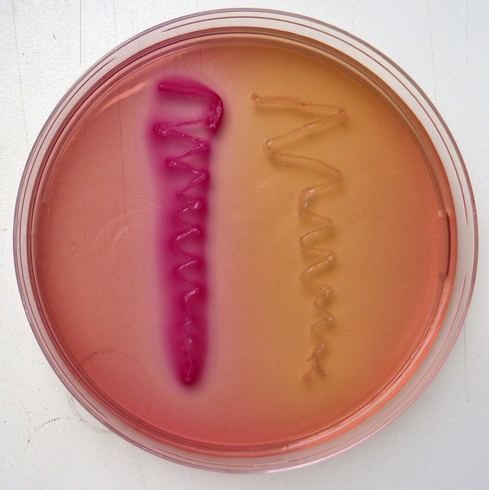
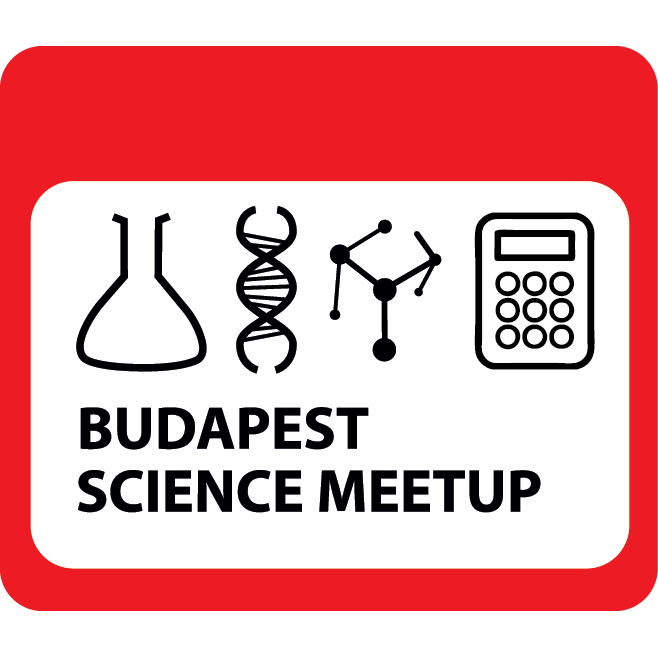
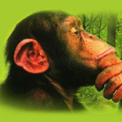

Teaching, public outreach
Courses
- 
- Genetics practical(BSc): Within the larger Genetics PR our group is in chrage for the Microbial Genetics block. During this practical the students will have the chance to learn about complementation, and to understand the simple logic behind the function of operons.
- Gene technology and protein engineering (MSc): This is one of the obligatory courses for all MSc students, where we teach about genome engineering, transgenic animals and optogenetics.
- Stem cells and regeneration (MSc): Embryonic and somatic stem cells; induced pluripotent stem cells (iPSCs) and organoids. Invertebrate and vertebrate somatic stem cell model systems. Invertebrate regeneration: cnidarians and planarians. Limb regeneration in vertebrates. The stem cell theory of cancer.
- Within the Genomics (MSc) course we teach the following material: The regulation of Eukaryotic gene expression. Epigenetics. Sex chromosomes and sex determination systems. Metazoan genome projects. Bacterial genomics and the genome of the eukaryotic organelles.
- Prokaryotic gene expression (MSc): The molecular mechanism of transcription and translation. The regulation of transcription with transcription factors and through DNA looping. Attenuation of transcription and translation (riboswitches). Quorum sensing, biofilms. The genetics of antibiotic resistance. The dynamics of transcriptional networks, synthetic biology.
- Developmental genetics Practical (MSc): During this practical the students will learn how to perform a simple genetic screen with C. elegans. They will do basic histology on fruit fly and zebrafish embryos, and will also learn about the methodology and logic of a small molecular screen performing one such experiment on zebrafish.
- One of the more holistic courses during our MSc educations is Humans and nature where we talk about the real and perceived dangers of gene technology, and its societal implications.
Science Communication

Bp Science Meetup
Budapest Science Meetup provides a platform for scientists to talk about their work in an informal setting to lay audiences.
More

Critical Biomass
The Critical Biomass is a blog by and for biologists, where we discuss new insights in embryology, gene technology and science communication.
MoreMedia appearances (mostly in Hungarian):
- 2018.02.19: Klubrádió - Ötös
- 2017.10.10: Inforádió - Szigma (Új módszerrel végzett vizsgálatok humánembriókon)
- 2017.07.16: M1 - Minden tudás (A regenerálódás igazi császára a zebradánió)
- 2017.06.24: Magyar Nemzet - Magazin (Gerinces modellállat)
- 2017.05.06: Szertár podcast (Az ember a zebrahal mögött)
- 2017.03.10: Inforádió - Szigma (Létrehozható-e „mamutosított verzió” az ázsiai elefántból?)